TournaQ Classics
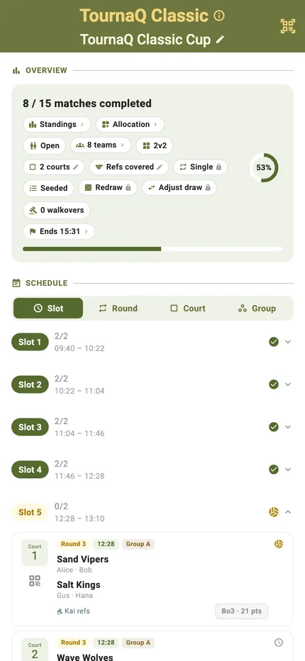
The format most tournaments actually use. Pool play first, so everyone gets a guaranteed run of matches and nobody travels an hour to lose once — then the qualifiers feed a knockout bracket where it starts to count.
TournaQ builds the groups, runs the pool schedule, works out who qualifies and seeds them into the bracket. With a bigger field it can carry a Silver bracket alongside the Gold, so the teams who miss the cut still have something to play for.
Best for
- Day-long events where everyone should get a decent number of matches
- Fields too big for a straight round robin and too good for a straight knockout
- Tournaments that want a real winner and a fair route to it
Finding it in the app
TournaQ Classics live under Team Competitions in the Arena. The hub keeps every event you have run.

The Arena
Every format the app can run, grouped by the kind of session it suits. The number on a card is how many of those you have run.
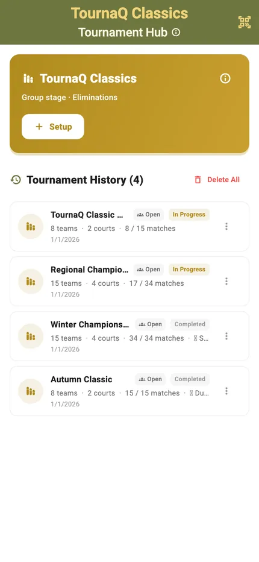
The Classics hub
New Tournament starts an event. Below it sits your history, each entry showing the date, the team count and how far it got.
Groups first, then the bracket
Two stages in one picture: the pools on the left, the knockout on the right, and labelled lines showing exactly which group place feeds which bracket slot.
How a team gets to the final
Finish first or second in your group and you are into the Gold bracket, in a slot decided by where you came. The labels — A1, B2, B1, A2 — are the qualification rule written on the diagram, so nobody has to be told how the draw was made.
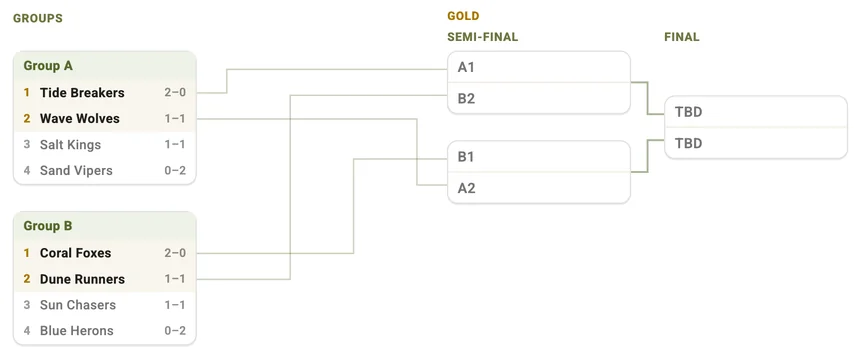
Setting it up
Add the teams and say how many groups you want. TournaQ divides the field, builds both stages and tells you what it will cost in time.
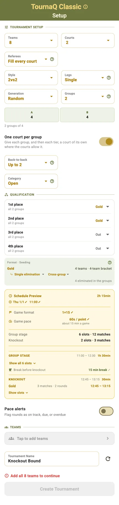
Groups, courts, qualification
Team count, number of groups, courts and match format, plus how many from each group go through. The Schedule Preview covers both stages, so the finish time you are shown is the real one.
An uneven field is handled rather than refused — the groups simply come out different sizes.
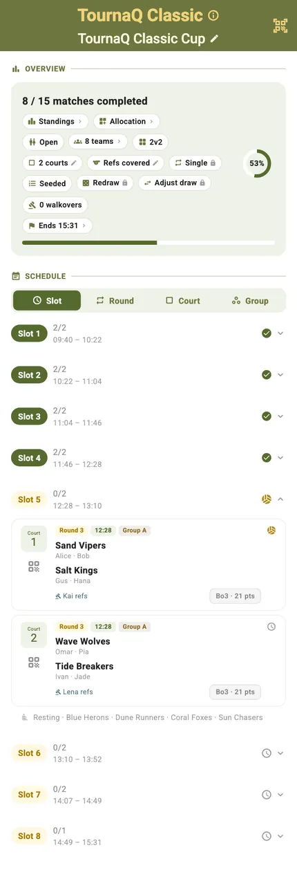
The schedule it produced
Every pool match, grouped and timed, before a point is played. If it does not fit the day, change the courts or the match length and look again.
Running the event
The group stage looks like a league; the knockout looks like a bracket. The same screen carries both, in the order they happen.
The schedule, live
Pool matches grouped by round with their courts, times and scores, and a progress ring showing how much of the event has been played.
By court
The same matches regrouped so each court lists its own sequence — the view to hand someone running one court all day.
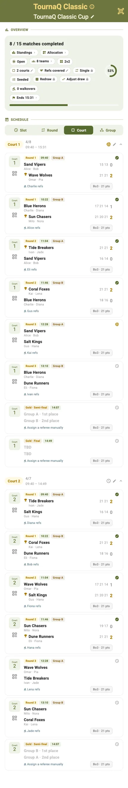
Who is on which court
The allocation grid lays the rounds against the courts, so you can see the shape of the day and where it will get tight.
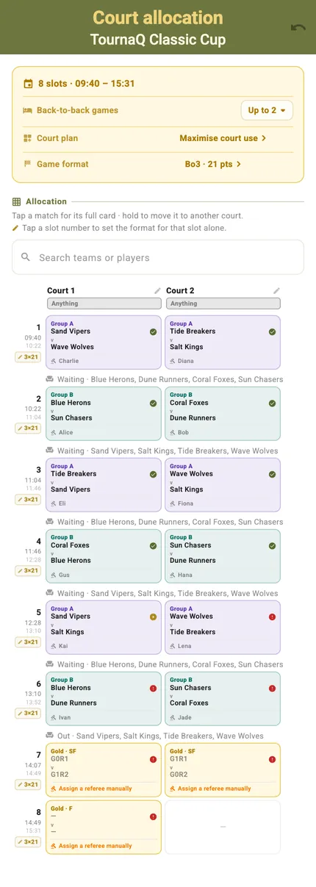
Scoring a match
The same scorecard through both stages — a pool match and a semi-final are scored identically.
Portrait
Tap a side to award the point. The server is highlighted and service passes automatically when the other side scores.
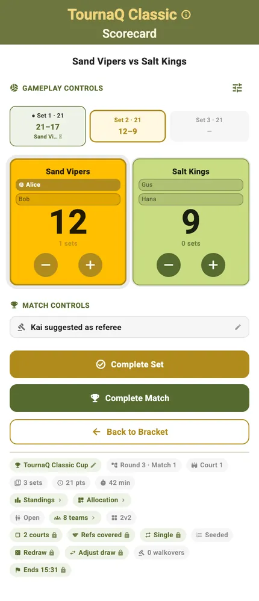
Landscape
Turn the phone and the controls rearrange for a net post or a side table. The layout changes, the functions do not.
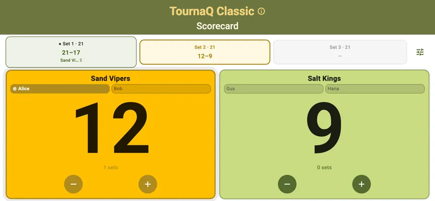
Group standings
Each group's table updates as its results land, so teams can see whether they are qualifying while the pool stage is still running.
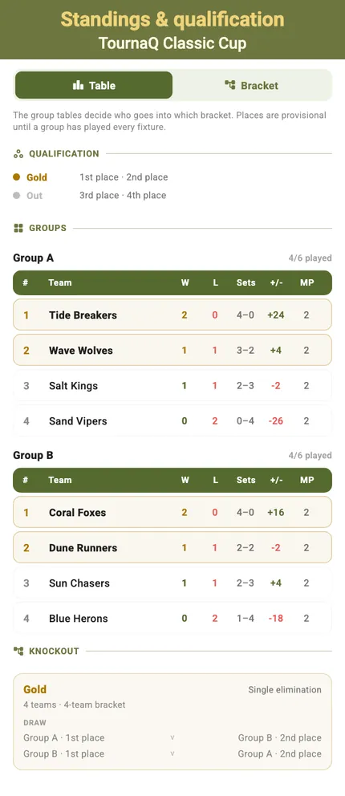
Deciding it
When the pools finish the bracket fills itself from the qualification rule, and the final decides the event.
The completed schedule
Every pool match and every knockout tie played, with the progress ring at a hundred per cent.
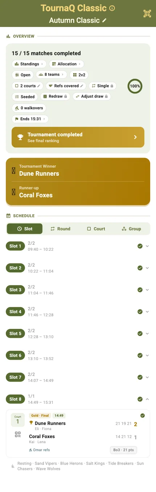
Final standings
The closing order across the whole event, placing every team by how far they got rather than only naming a winner.
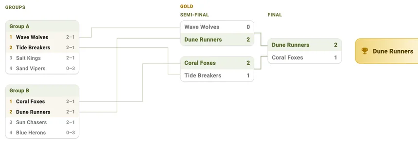
The same format, under load
Two groups and one bracket is the simple case. Fifteen teams in four uneven groups, with a Silver bracket for the teams who miss Gold, is where the format earns its keep.
Gold and Silver, from uneven groups
Four groups of four, four and three. First and second go to Gold, third and fourth to Silver — and because the short group has no fourth place, Silver draws seven qualifiers into eight slots and carries a real bye. TournaQ works that out rather than making you fudge it.
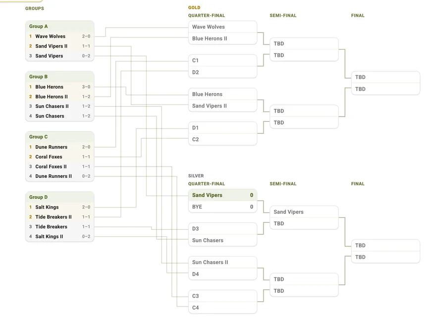
Setting up the bigger event
Nothing new to learn: the same form, the same schedule, the same tables — just more of them.
Fifteen teams, four groups
The setup form takes the larger field and divides it, unevenly where it has to. Nothing is refused for not being a round number.
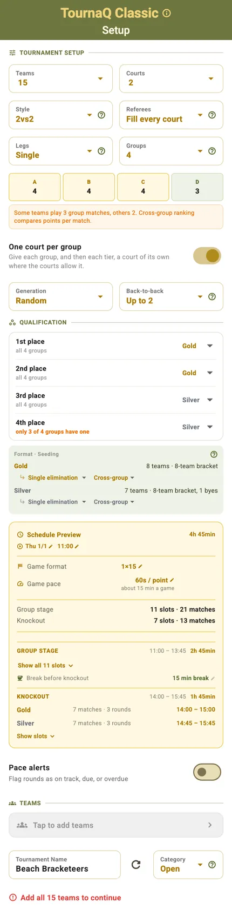
The schedule it built
Every pool match across four groups, timed and assigned to courts, before anyone plays.
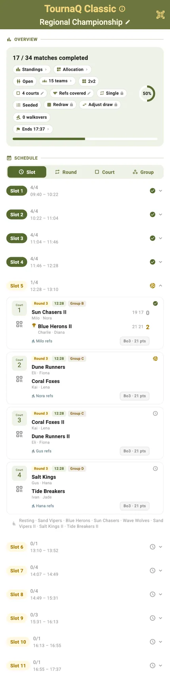
Four tables at once
Each group keeps its own standings, and qualification is read off all four together.
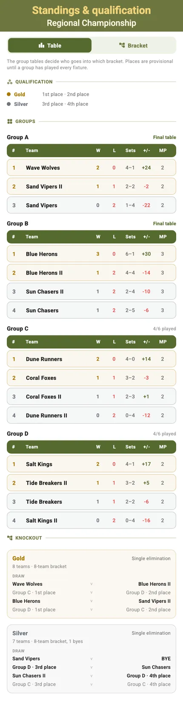
Start to finish
- Open the TournaQ Arena and pick TournaQ Classics.
- Tap New Tournament.
- Add the teams and choose how many groups to split them into.
- Set the courts, match format and how many from each group qualify.
- Check the schedule preview — it covers the pool stage and the bracket.
- Name the event and tap Create Tournament.
- Score the pool matches; each group's table updates as results land.
- When the pools finish, the bracket fills itself from the qualification rule.
- Play the knockout through to the final.
- Read the final standings across the whole event.
Have a question about TournaQ Classics, spotted something missing, or want to suggest an improvement?